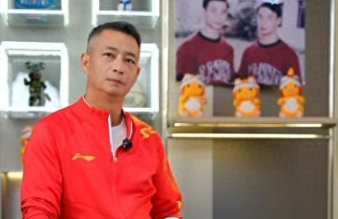

直播吧08月05日讯 巴黎奥运会，男子体操单杠决赛，中国选手张博恒在下法落地时出现失误，最终获得铜牌，苏炜德在下法落地也出现失误，最终获得第5。
赛后前中国体操队运动员，世界冠军、奥运冠军李小双再度怒斥中国体操教练组。
李小双发言内容↓
我们的教练真的该好好地打醒打醒自己，管理团队的问题，对平时训练要求的问题，包括我现在看到所有的队员，做完动作都没一个完整的亮相，没有一个！来自于哪？平时训练根本要求就不够高嘛。
真的，这个下法竟然会出问题，你看看人家的下法。我真的不想说可惜两个字，我是比较刻薄的人，差就是差！我们应该总结一下，总结一下四年来四年后，我们应该展现什么样的东西。
虽然你们是国家队教练，水平比我高很多，但双杠还是要讲一下，中国精神、中国运动、中国体操应该是什么样的，平时要求不严格，就不可能在比赛中体现出来，如果平时要求严格，一定会在比赛比出你的风范。
我们的落地实在是太差，落地的预判动作根本就没有，有一个足够的落地空间的感觉，都没有啊！
我们今天一直在讲，只要是正常的发挥，落地站稳了就行了。但你别说是站稳，你连挪步的机会都没有，直接是摔在那的。
也别怪我发脾气，虽然跟我没关系，成绩本身跟我也没关系，但我能不能发点脾气，当然可以。
Advertisements